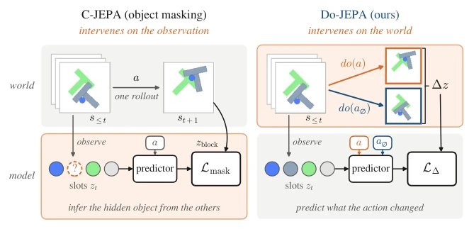
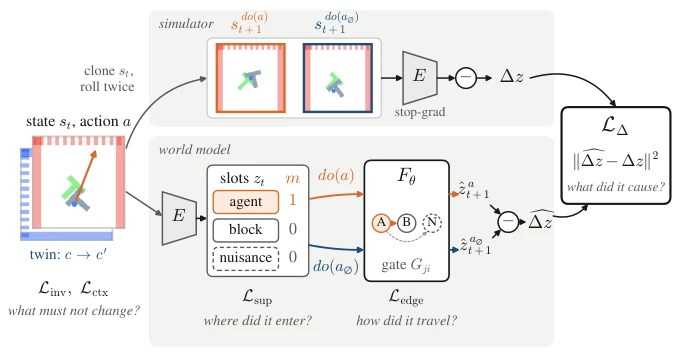
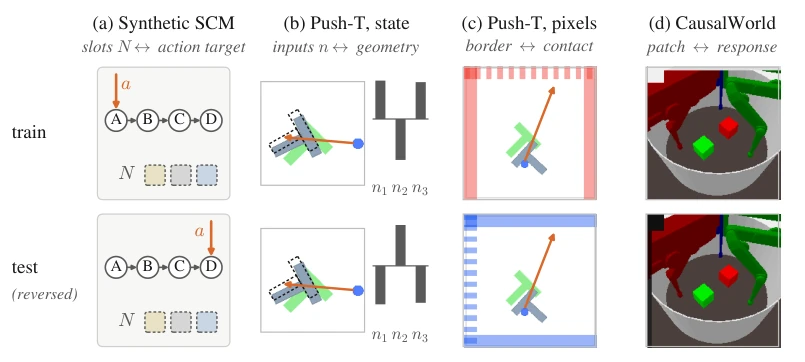
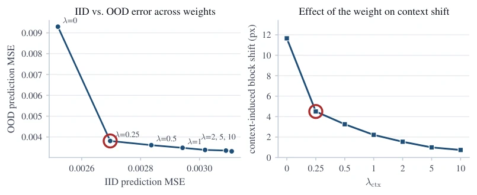
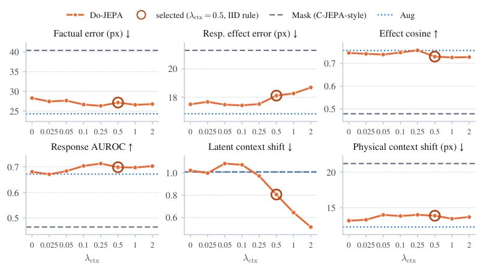
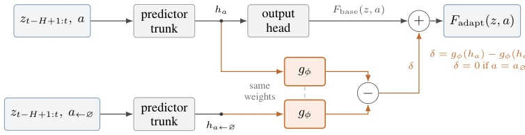

传统 latent world models (如 JEPA, Ha & Schmidhuber, 2018; LeCun, 2022) 训练目标是预测下一帧，但动作和结果的相关性不等于因果。当存在混淆变量（nuisance）时，模型会学错变量。C-JEPA (Nam et al., 2026) 通过遮挡 object slots 引入干预，但这只是干预了“观测”，没干预“物理过程”，目标仍来自日志 rollout。如果背景噪声与动作共变，模型依然会过拟合。本文旨在解决“动作导致什么”与“动作伴随什么”的混淆，通过物理干预分离因果效应，提升模型在分布外（OOD）场景下的鲁棒性和规划能力。
—

Figure 1: Masking versus intervention. Both methods see the same history, slots and action; orange marks where each intervenes. Left: C-JEPA (Nam et al., 2026) hides an object’s slots and predicts them from the others, with targets from the same logged rollout: it changes what the model sees. Right: DO-JEPA runs one saved simulator state forward under a and under a∅and supervises the difference ∆z of the two latent futures (Eq. 3): it changes what happens. Frames: Push-T.
方法Method
核心是 Paired Interventions。从保存的模拟器状态 st 出发，分别执行动作 a 和参考动作 a∅（如 no-op），生成成对轨迹。计算潜在未来差异 Δz = za - za∅。模型架构包含 Transformer 预测器、动作入口掩码 m 和门控消息传递。训练目标分为四部分：Effect Loss (LΔ) 预测动作引起的变化；Support Loss (Lsup) 定位动作直接作用对象；Propagation Loss (Ledge) 学习效果传播路径（门控 Gji）；Invariance/Context Loss (Linv/Lctx) 确保无关变量不变。全目标 L 包含预测项和干预项。推理时仅用单条轨迹，通过对比 a 和 a∅ 预测效应。这种方法不需要图标签，直接从成对 rollout 中提取因果信号，强制模型学习物理机制而非统计捷径。具体而言，掩码 m 通过 softmax 将动作路由至特定 slot，门控 G 控制消息传递，确保效应仅在相关对象间传播，且 gates 依赖 slot 状态而非全局特征。
—

Figure 2: DO-JEPA training. Top: the simulator runs the saved state st under do(a) and do(a∅); the encoder E (frozen in the slot models shown here) gives the target ∆z. Bottom: the world model encodes the observation into slots zt, routes the action into a slot through the mask m and propagates its effect through the gates Gji; c ∆z is the difference of its two predictions. L∆: what the action caused; Lsup: where it entered; Ledge: how it travelled; Linv, Lctx: what must not change.
Figure 3: Effect loss on LeWM, pixel Push-T. AUG and PAIRED see the same paired images; PAIRED adds L∆. Latent metrics; means over three fresh seeds (dots: seeds); red: relative change (absolute for the cosine, taken over all pairs). Panels 1–3: held-out pairs from the training distribution (half responsive); panel 4: outcome-unfiltered holdout (6.5% responsive).

Figure 4: Nuisances and shifts in each benchmark. In every benchmark the nuisance is correlated with the outcome during training and the correlation is reversed (or, for mechanism shifts, the physics is changed) at test time. The physics of the two members of a context twin is identical by construction.

Figure 5: Context weight in state Push-T, strong confound. Left: IID and OOD prediction error against λctx (seed 7); the circled point (both panels) is λctx = 0.25, chosen as the point on the IID–OOD trade-off curve closest to the ideal, so this seed’s OOD split informed the choice. Right: the context-induced block displacement falls monotonically with λctx.

Figure 6: Context weight in vision Push-T (seed 7, OOD). DO-JEPA across λctx (orange) against C-JEPA- style masking (dashed) and AUG (dotted) on the same split. DO-JEPA beats masking on every metric at every weight, and a larger weight halves the latent context shift. The circled weight was selected on IID data as the smallest one with at least 20% lower latent context shift and at most 5% higher effect RMSE, 0.02 lower AUROC and 0.03 lower cosine; OOD values are shown.

Figure 7: Centered action-effect adapter (Eq. 11). The frozen predictor runs twice on the same history: with the action a, and with the last action replaced by the no-op. A trainable map gϕ with shared weights is applied to both feature vectors, and their difference δ is added to the base prediction. δ is exactly zero for a = a∅, whatever the parameters ϕ.